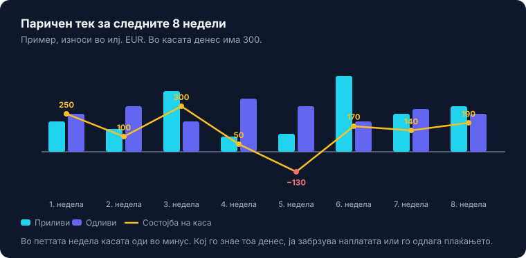
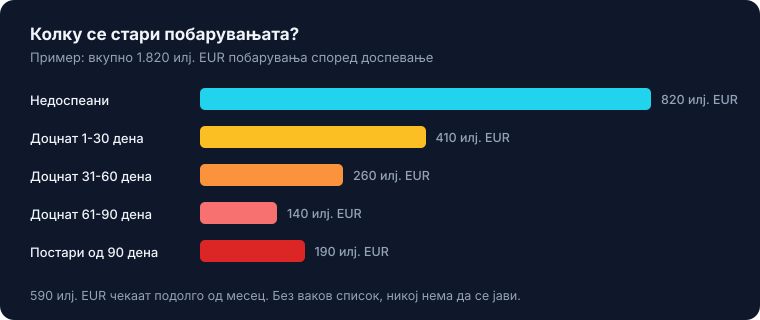

Зошто е потребен софтвер за финансии и сметководство?
Многу сопственици на фирми велат „имаме сметководство“ и притоа мислат на надворешниот сметководител. Тој ги книжи фактурите, ги поднесува даночните пријави, ги води законските книги. Но одговорот на прашањата „кому што плаќаме оваа недела, од кого што треба да наплатиме, ќе го извадиме ли крајот на месецот“ не е кај него. Тие прашања чекаат одговор внатре во фирмата, најчесто во главата на газдата и во една Excel датотека.

Постојат две сметководства
Првото е официјалното сметководство што се води за државата. Гледа наназад, правилата му се познати, го води сметководителот. Второто е евиденцијата што фирмата ја води за да управува со себе. Тоа се нарекува оперативно сметководство или следење на финансиите. Гледа на денес и на следните недели.
За првото сите некако воспоставиле ред, затоа што е задолжително. Второто кај повеќето фирми е расфрлано. Салдата на коминтентите се во еден Excel, чековите во роковник, банкарските промени во е-банкарството, ратите за кредит во друга датотека. Единственото место каде што сè се гледа заедно е умот на газдата.
Во касата има пари, а по три недели?
Кај повеќето фирми следење на финансиите значи наутро да се погледне сметката во банка. Ако има пари, се смета дека сè е во ред. Салдото го покажува денешниот ден. Не го покажува чекот што доспева следната недела, платите на средината на месецот, плаќањето на ДДВ и наплатата од клиентот што доцни.

Затоа и профитабилни фирми западнуваат во недостиг на готовина. Продажбата е направена, фактурата издадена, на хартија е заработено. Но ако наплатата е по шеесет дена, а плаќањето кон добавувачот по триесет, празнината меѓу нив треба од некаде да се покрие. Фирмата што го гледа тоа пет недели однапред води мирен разговор со банката. Таа што ќе забележи последниот ден го зема најскапиот кредит што може да го најде.
Побарувања што не се наплатуваат
Кај фирмите со кои разговараме најчесто среќаваме вакво нешто: се знае кој колку должи, но не се знае од кога должи. Во списокот на коминтенти има дваесет клиенти и износи покрај нив. Кој е со пречекорен рок, кој не платил три месеци — од списокот не се гледа.

Кога никој не се јавува за доспеаното побарување, ни клиентот не брза. Му плаќа на тој што прв ќе побара. Едноставен список што ја покажува староста на побарувањата и редовни јавувања еднаш неделно забележливо го скратуваат времето на наплата.
Слична загуба има и кај фактурирањето. Работата е испорачана, но за да се издаде фактура некој треба да ги собере испратниците, а тоа останува за крајот на месецот. Бидејќи фактурата се издава доцна, рокот почнува доцна и парите доаѓаат доцна.
Што спојува софтверот за финансии?
Ги собира горните делови во еден запис. Кога ќе се издаде излезна фактура, таа сама се книжи на картицата на клиентот и во календарот на доспевање. Кога ќе се внесе влезна фактура, се додава во списокот за плаќање. Чековите, мениците, ратите за кредит и платите стојат во истиот календар.
Кога овие записи се на едно место, прегледот на готовината за следните недели излегува сам. Не мора никого да прашувате „што плаќаме овој месец“.
Фактурирањето се врзува за продажбата. Испорачаната нарачка со едно копче станува фактура и се испраќа како е-фактура. Случаите „работата е завршена, а фактурата не е издадена“ се гледаат на екранот како посебен список.
Банкарските изводи се внесуваат во системот и се усогласуваат со записите. Се гледа која наплата на која фактура припаѓа и што се промените што не се поврзани со ништо.
И трошоците се класифицираат. Кој оддел, кој проект, кое возило колку троши — на крајот на месецот се добива со неколку клика. Оттука натаму темата се надоврзува на мерење на профитабилноста на проект.
Како се дели работата со сметководителот?
Уредната евиденција во фирмата му ја олеснува работата и на сметководителот. Наместо на крајот на месецот да му пратите кеса со фактури, му предавате класифицирани и усогласени записи. Извештајот што ќе го добиете од него можете да го споредите со својата евиденција.
Кај повеќето фирми не треба да се менува програмата што ја користи сметководителот. Системот во фирмата ги извезува податоците во форма погодна за неговата програма. Има и фирми што сакаат официјалното сметководство целосно да го водат внатре, но тоа е посебна одлука и не мора да биде прв чекор.
Кога станува потребно?
- Ако бројот на издадени и примени фактури месечно е над сто.
- Ако продавате и купувате со одложено плаќање.
- Ако календарот на чекови, меници или кредитни рати е во роковникот на еден човек.
- Ако ви треба половина час да дознаете кој колку дена должи.
- Ако не можете со бројка да кажете каква ќе биде готовината следниот месец.
Од каде се почнува?
Двете теми што најбрзо даваат резултат се салдата на коминтентите и следењето на роковите. Внесете ги во системот салдата на клиентите и добавувачите, отворените фактури и нивните рокови. И само тоа е доволно да го видите списокот на побарувања и плаќањата за следните недели.
Втор чекор е да се поврзе фактурирањето со продажбата, трет е усогласувањето со банката. Класификацијата на трошоците и буџетот можат да останат за крај.
Кај алатките има програми што водат само фактури и евиденција на коминтенти, ERP системи што работат заедно со продажбата и залихите и решенија што се некаде помеѓу. Ако продажбата, залихите и набавката се водат во друг систем, финансиите мора да комуницираат со нив. Инаку секоја фактура се внесува двапати. Кога избираме, прво ја гледаме таа врска.
Често поставувани прашања
Имаме сметководител, дали ни треба и ова?
Тоа се две различни работи. Сметководителот ја води законската евиденција за изминатиот период. Следењето на финансиите ја покажува денешната состојба на побарувањата, обврските и готовината и е потребно за секојдневните одлуки на фирмата.
Користиме програма за фактурирање и евиденција, не е ли доволна?
За следење на коминтенти и фактури може да биде доволна. Обично недостига врската со продажбата, залихите и проектите. Ако истиот податок го внесувате во два системи или табелата за готовина сè уште ја правите во Excel, време е да погледнете чекор погоре.
Дали треба да се пренесат старите записи?
Не сите. Доволни се отворените фактури, тековните салда на коминтентите и недоспеаните чекови и меници. Затворените стари записи можат да останат каде што се.
Поврзани услуги: ERP решенија за мали и средни фирми, консалтинг за дигитална трансформација.
Колку годишно ве чини следењето преку датотеки?
Пресметајте го годишниот трошок за повторно внесување, рачно изготвени извештаи и грешки поради датотеки.
Отвори го калкулаторотДа го направиме заедно вашиот преглед на готовината
Да ги видиме заедно приливите и одливите за следните осум недели.
Да разговараме за вашиот проект